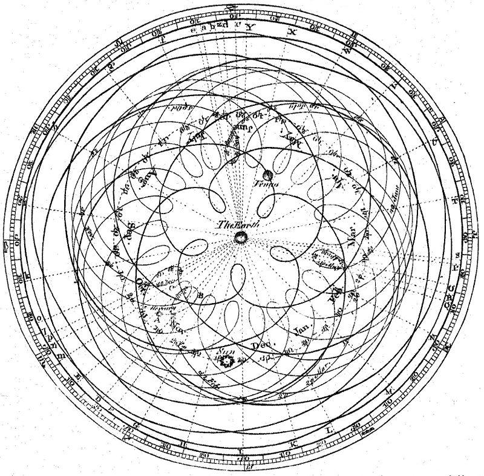
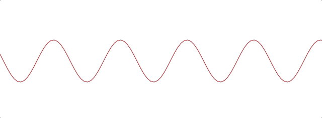
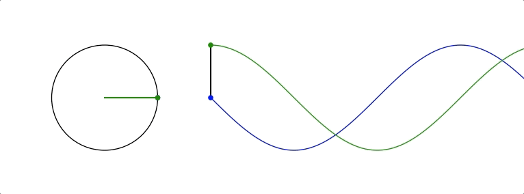

LZ
Discrete Fourier Transform
This is just my understanding / intuitive explanation of what this algorithm means.
So, what's the objective here?
Digital signals in sounds usually come to us in the time-domain form. That is to say a linear array of values, each relating to a sample in time.
The fundamental question we are asking is this:
- "how do we make a frequency-domain representation of a signal?"
What we will see is that this question is really the same question as:
- "What sinusoids are present in a signal, and what is their amplitude and phase?"
A Roundabout Introduction
Joseph Fourier was a French mathematician who was doing his thing at the end of the 18th to the beginning of the 19th centuries. Two things that we will discuss carry his name: The Fourier Transforms and Fourier Series. A Fourier series is a representation of a signal as a sum of a series of sinusoids. The Fourier Transforms are, as far as we are concerned, algorithms for identifying which sinusoids are in that series. So it's essentially a the recipe of a signal, where the raw ingredients are sinusoids.
Sinusoids, circles and epicycles
Let's start by thinking of a sinusoid as an aspect of circular movement in relation to time. As we probably all learned in school at some stage, sine and cosine functions describe the ratios of various sides of a right-angle triangle as its angle \(\theta\) changes. You may have seen some sort of visual representation of this with a right-angle triangle in the unit circle, like this:

If we add a more circles to our system we can start to make more elaborate periodic signals, like so:

So we have this idea that given enough circles, you can make all sorts of complicated 2D patterns.
This idea was well understood way back into antiquity. Many scientists through history have been concerned with mapping out the movements of the stars. Since the idea that the earth was the center of the universe was generally accepted for a long time, many extremely elaborate models of circles within circles were dreamt up to explain the movements of the heavenly bodies. This method of circles with circles was called deferent and epicycle. Despite being wrong, this vision of the universe managed to give pretty accurate predictions, and was relied on for millennia until Copernicus came along with heliocentrism.
Remember the popular toy Spirograph? That was essentially based on the idea of epicycles. The image below shows the kind of beautiful mess that epicycles and geocentricism gave us:
In the words of Norwood Russell Hanson:
There is no bilaterally-symmetrical, nor eccentrically-periodic curve used in any branch of astrophysics or observational astronomy which could not be smoothly plotted as the resultant motion of a point turning within a constellation of epicycles, finite in number, revolving around a fixed deferent.

Rather than trying to work through any formal proof here, I think it's quite sufficient at this stage to just assume the following: Just like having enough circles can explain the movement of all the stars in the redundant geocentric model - given enough sinusoids, using destructive and constructive interference, we could make any signal we want.
We could demonstrate this by proving that we can make a single-sample impulse and then extrapolating that to show we could add those impulses together to make any series of samples. But I think that's a distraction here, and the end result is intuitive.
Amplitude and Phase
What we do need is a method to find out which sinusoids are in a given signal. Just the frequency of those sinusoids isn't enough information. We also need their amplitude and phase properties. You know what those are, right? Amplitude is how loud the sinusoid is, phase is its offset in time.
Here's a sinusoid with its amplitude being changed:

And here's one with its phase value being changed:

Phase is aurally a strange property because we don't really hear it in the direct sense we hear frequency or amplitude, however it can affect sounds differently in different situations from resultant destructive and constructive interference.
So, as we discussed above, with enough sinusoids with various frequency, amplitude and phase values can make any signal we like. But how to find out which frequencies, amplitudes and phase values we need?
Hold that thought. We're going to need to make sure some other mathematical dependencies are installed in your brain-sacks in order to solve this problem. If these concepts are all new to you, or you want more depth on these topics then further reading on them is definitely recommended, we'll barely scratch the surface here. Links at the bottom of the article
Imaginary and Complex Numbers
\[i = \sqrt{−1}\]
This number i, sometimes called j by engineers, is the unit of imaginary numbers. Mathematics was having a hard time reconciling the idea of square roots with negative numbers, because it makes no intuitive sense to to find a number that multiplies with itself to make a negative. The solution was to just give them a new name.
Imaginary numbers were first described as such by René Descartes, who was essentially taking the piss out of what he and many mathematicians saw as a bandage-job and not proper maths. However, as time passed it became clear that this solution opened up a whole bunch of interesting possibilities that so-called real numbers didn't offer.
Incidentally, if you think imaginary is a rubbish name for them, then you are not alone. Gauss suggested lateral numbers as a better name, which makes a lot of sense to me.
We can treat i in many of the same ways we would an algebraic variable, which is handy. So \[3\times 2i = 6i\] or \[\frac{10i}{2} = 5i\] and so on.
We can also use them alongside real numbers. The combination of imaginary and real numbers are what we call complex numbers. This is usually just written as an addition, for example \[10 + 5i\]. While these complex numbers don't really have a position on a normal 1 dimensional number line, we can position them in two dimensions. This is usually done with the x-axis as real and the y-axis as imaginary. Here's \(4 + 3i\) in the complex plane:

As with any position in a 2D space, we can use Cartesian coordinates, but we can also talk about it in polar coordinates, terms of a magnitude and angle.

Using basic trigonometry we can work out its polar coordinates from the Cartesian ones. We know that the magnitude, which is just the hypotenuse of a right-angle triangle, and therefore equal to \[\sqrt{real^2 + ima^2}\], and the angle is equal to \[\tan^{−1}({\frac{ima}{real}})\].
Eventually we'll use complex numbers to start talking about circular movements in the complex plane, and that will be very useful for figuring out what sinusoids are living in a signal. Before that let's boot up some other concepts we'll need.
Euler's Number
Usually known as simply e, Euler's number is a mathematical constant. It's a real, irrational number that's approximately equal to 2.71828. This number is important to us because it's intrinsically linked to continuous growth. We can imagine how we get to e through an analogy to compound interest.
Growth
This section seems pretty unrelated at first, but it's actually key to understanding the DFT. I should add that this bank loan analogy is just an analogy. I don't understand anything about finance or loans. Just go with it.
Imagine we take out a loan from the bank in January. It's only a small loan, just £1.00 in fact! However, we get a really bad interest rate for our loan: 100% per year. Now after a year how much do we owe the bank? Well, it depends on when they calculate the interest. If it's at the end of the year, for example:
- Then we owe them the original £1 + another £1 of interest. That's £2.
But what if they calculate it half-way through the year?
- /That'd be 50% in June and then 50% in January. So in June the debt becomes £1 + 50% of £1. So a total of £1.50. Then we get to January and we have £1.50 + 50% of £1.50, so a total of £2.25. That's a worse deal for us!/
OK, so how about 4 times a year?
- /That's £1 + £0.25 = £1.25 in March, then by June we're at £1.56 ish. September takes us to around £1.95. Now by the New Year we're at about £2.44./
We can see a pattern forming, the more we divide up the year, the more money we owe by the end of it. This value doesn't shoot up uncontrollably however, it converges around the value £2.71828… our old friend e.
So, e is the value that you get if you grow 1 continuously by 100% for exactly 1 unit of time.
We can use e as a base of an exponent to grow 1 by amounts other than 100%:
- as we've already seen, growing at 100% yields: \[e^1 \approx 2.71828\]
- Growing at 200%: \[e^2 \approx 7.368\]
- Growing at 300%: \[e^3 \approx 20.086\]
These are the values that you'd end up with if our initial interest rate was 200% or 300% respectively. So, going forward, whenever we see something in the format \(e^n\), we can think of it as 1 being grown for one unit of time an \(n\times 100\%\).
What about for longer than 1 unit of time? Well, we can break down n into a multiplication. What n really equals is \[rate \times duration\]. Why? Well growing something at 100% for 3 units of time is really just the same result as growing it at 300% for one unit of time.
What about if we don't want our initial loan to be £1? After all, it's a silly amount to be borrowing. Well we can just multiply the whole thing by the initial amount we want, so we end up with a sort of formula for continuous growth:
\[a \times e^{rd}\]
Where a equals our initial amount, r is the rate and d is the duration.
For example, if we had some gray goo that grows continuously at a rate 300%. If we start with 10 grams of gray goo on the beginning of Monday, by the end of Wednesday we'll have \[10 \times e^{3 \times 3} = 81030.8392758\], so about 81.03kg of gray goo!
How is all this gray goo stuff helping us with the Fourier Transforms?
This all seems pretty far away from our main agenda now, I know, but what we are going to see is that growth really translates into rotation when we start using e in the complex plane. That is going to help us make a tool for seeking out sinusoids in a signal.
Imaginary Growth is Anticlockwise Rotation
To turn growth into rotation, let's try growing 1 by i, so using our formula this is \(e^i\). If we put this into a calculator we'll get back something like: \(0.540302306 + 0.841470985 i\).
What happened there? We got a complex number, both components have a value between 0 and 1. Maybe you would have expected at least the real component to get bigger since we started with 1 and grew it. Things get a bit clearer if we think \(e^i\) in polar coordinates.
Remember the magnitude is \(\sqrt{real^2 + ima^2}\).
So that's \[\sqrt{0.540302306^2 + 0.841470985^2} ~= 1 \]
And recall the angle is equal to \[\tan^{−1}({\frac{ima}{real}})\] .
So \[\tan^{−1} \left( \frac{0.841470985}{0.540302306} \right ) = 57.29577951282339\]. Which doesn't seem too special until you convert it from degrees to radians. Then you'll see the answer comes to (allowing for some rounding error) 1.
So what's really happened is that we've grown our initial 1 but, instead of going further along the real axis, it has grown along the edge of a perimeter circle exactly one radian. We've rotated it by 1.

The upshot is we can use e to make circles. This is the basis of the complex sinusoid.
Complex sinusoid
The complex sinusoid is really just the sum of two sinusoids, one real and one imaginary. These two sinusoids are in phase quadrature, which is just a fancy way of saying exactly halfway between in phase and perfectly out of phase. This is also called sometimes called an orthogonal relationship, meaning they are at right-angles. This makes sense because their phase difference is 90 degrees.
The most obvious example of sinusoids in phase quadrature are the sine and cosine functions; sine is really just a cosine that's been shifted forward by 90 degrees.
Think about quadrature as when sinusoids of the same frequency are at the most unrelated they can possibly be. Which is to say, while in phase or close to it they match pretty well up, and while perfectly out of phase or close to it they are not far off being mirror images of each other. In quadrature they are as dissimilar as can be without becoming opposite.
We can use the rotational abilities of Euler's number to generate our complex sinusoid. As we saw above, we can use e to rotate a point in a circular arc. At any stage of rotation the position of that point can be described by Cartesian coordinates, which are just the two sides of a right-angle triangle.
Along the real axis we'll have a length (the adjacent side of a right-angle triangle) that will oscillate as a cosine function, and along the imaginary axis the length (which is same length as the opposite side of a right-angle triangle) will describe a sine function. This is how we use the magic of e to make a complex sinusoid:
\[e^{i\omega t} = \cos(\omega t) + i\sin(\omega t)\]
Where \(t\) is the time and \(\omega\) is frequency.
This is an alternative form of Euler's formula. This gives rise to one of the most beautiful mathematical identities out there, known as Euler's identity. It's a related but tangential topic which I encourage you to read about.
Taking the formula above, if we keep \(\omega = 1\) and increment through \(t\) in time, we the situation described by the animation below: The imaginary component is in blue and the real component is in green.

There is no magic to having a real and an imaginary component, it's just a convenience. We need two sinusoids in quadrature, as we will see this helps us get the phase information of the sinusoids inside a signal. Using a complex sinusoid helps us keep it all compact and tidy.
The Discrete Fourier Transform
We've got all the bits we need! We're going to just dive in:

OK, there's a bunch going on here, it'll take a bit of unpicking:
We need to know that \(x\) is the input signal and \(X\) is the output spectrum. \(N\) is the number of samples in our input signal. Notice the distinction between \(N\) and \(n\), which is really the time index of our input signal. Everyone else you've already met, or is defined in the equation. We'll go through with the colours:
- Frequency bin k in the output spectrum X equals…
- the sum, of…
- The nth sample of our input signal
- Multiplied by
- -i times a full circle's worth of radians of rotation times the k, which is the bin number, times...
- n the present sample number, over N, the number of samples in our input signal
Let's clarify things a bit. Frequency bins are essentially the frequencies that we will graph on our output spectrum. There are as many of them as there are samples in the input signal. They represent the sinusoids in the signal. So X is made up of a bunch of bins, which we keep track of with the variable k.
There are two variables in this that we are looping through: k and n. The k is the bin frequencies and the n is the time indices. Think of the n loop as being inside the k loop. For every new k we get the full range of n.
The sum goes from 0 to N-1 (so thats N many). From this we can see that for every frequency bin we are summing together N things. That's potentially a lot of summing, which is why the DFT can sometimes be slow. Inside that sum is our input signal multiplied by a complex sinusoid. The exponent of our complex sinusoid has a rate, which is \(2 \pi\) radians (ie. all the way round) times k, which is the frequency. The exponent also has a time, which is n samples out of a total of N.
Notice the sign of the exponent is negative, because we are rotating here clockwise rather than an anticlockwise as we have been before.
As we already know, the complex sinusoid is made up of a real cosine function and an imaginary sine function. So we could just as well write in ether of these forms:

So here's a broad-stroke description:
For every frequency we make a complex sinusoid of the given frequency and multiply that with our input signal. The sum of all the samples of the resulting multiplication will indicate the amount of that frequency present in the signal.
You may be asking yourself…
Why are we multiplying our input signal by sinusoids?
The complex sinusoid is different for each bin. It's frequency is set by k. This complex sinusoid hunts for a sinusoid that matches it in our input signal and, if it finds something, will give us back some numbers that we can then use to find the amplitude and phase of of that frequency.
Imagine we have a sinusoid A, which is at Nyquist frequency, 7 samples long:

If we summed all of these samples we'd get -1. The 1s mostly cancel out the -1s along the way, and if this was an even longer signal they'd continue to do so, no matter how many samples long this sinusoid was, the sum of all it's samples would never equal anything greater than 1 or less than -1.
Say we do a point-wise multiplication this by a sinusoid of a another sinusoid of a different frequency, for example ½ Nyquist frequency:

The sum of AB is now 0. The positives cancel out the negatives even after the multiplication.
However, what if we multiply A by a sinusoid with the same frequency?

Now the sum of AB = 7 because a negative times a negative is a positive. This in phase quality of A and B yields a larger number. The size of this number really tells us the amount of B in A, times the number of samples in total. If A and B were perfectly out of phase we'd get a -7, telling us that A is the exact opposite of B.
However, if it's not in phase or exactly out of phase then we are not going to get such a clear indication of its presence. That's why we need both components of the complex sinusoid. Let's see this by working through some examples:
Examples
We'll start with a signal to test. Here's a signal made from two sinusoids. We'll use the just the real part of the DFT to find out which sinusoids.

We'll call this input signal x.
It's 10 samples long (0 to 9). The DFT always uses the same number of bins as the length of the input signal. So our output spectrum will show 10 frequencies. So we're going to make 10 sinusoids and multiply our input signal above with them:
So k goes from 0 to 9. Our real sinusoids are as follows. Notice 2 things: Firstly, these cosines are not very smooth because of the low sample-rate. That's OK though. Secondly, once we get past a frequency of \[2 \pi \times 5\] the frequencies look like they are going back down. Once we pass Nyquist we enter into negative frequencies. These are just discarded if we are analyzing the real signal (ie. any sound signal) since they will give results symmetrical to the positive frequencies. With this first example we'll only look at the real component of our complex sinusoids.
In this case, for example you might see the results that are all zero apart from at frequencies 2 and 3 (and their respective negative frequencies 7 and 8). These are indeed the frequencies that x was made from. Here they both happened to be at 0 phase, so we can catch it all with just the real sinusoids.
But what happens if they don't start at the right time? We'll try another example and use both the real and imaginary components of our complex sinusoids.
We looked at calculating phase and magnitude before when we were talking about points in the complex plane. This is what we'll do with our real and imaginary components.
*What we need to do here is imagine the sums of our multiplications of the signal with our real and imaginary sinusoids as Cartesian coordinates, and we want to work out their polar coordinates - their magnitude and phase.*
Here's a new example: it is also 10 samples long, but we'll only bother with the frequencies up to Nyquist because of the symmetry explained above.


As we can see, the two sinusoids were matching the bin frequencies 1 and 4. At 1 it was in phase, at 4 it was one radian out of phase.
This is what the DFT does. It gives us a set of coordinates for each frequency, and from those we can work out the magnitude and phase. If you graphed the magnitude section, you'd get what you might recognise as a static frequency spectrum of that sound.
Some Properties of the DFT
The bigger the DFT, the more frequency detail
Since the number of frequency bins depends on the number of samples that are input, we can say that the longer the sample size, the more detail frequency we can get in our output spectrum.
The magnitude spectrum is symmetrical around the y-axis for any real signal
As we've seen, the DFT gives us magnitude and phase values for a set of frequencies. These frequencies are determined by the length of the input signal. However, in practice we are only using the first half of them because the second half become the negative frequencies and are symmetrical.
If a sinusoid in a signal doesn't exactly match a bin frequency, a peak will form at its closest bin frequency
We only saw what happens if the input signal is made of sinusoids that perfectly match one of the bin frequencies - what happens if there are sinusoids present that are not exactly one of those frequencies? Well, our input signal is inherently band-limited because it is discrete. So there simply can't exist any frequencies which are above Nyquist or below the frequency of a sinusoid that completes one oscillation across the entire length of N. Nonetheless we could have a frequency that is in between two of our bin frequencies (in fact, out in the wild most frequencies will be like that). In this case the DFT will give you a peak at the closest bin frequency and the rest of the sinusoids energy will be distributed around a bunch of other bins at a generally low level.
The magnitude is scaled by the number of samples in the input signal
Also, you may have noticed that the magnitude spectrum output is scaled by the number of samples in our input signal. To get the amplitude you'll have to divide it by N.
Where next?
As pointed out at the top of the page, we barely scratched the surface here. I hope, however, it is enough to solidify some of the basic concepts and provide an "a-ha" or two. Some key topics we've missed here include the benefits of zero-padding, zero-phase windowing, windows, and many more. I strongly recommend Julius Smith's website for a very in-depth read on all the main topics. It's an awful lot more academic than the approach in this article.
For a fun journey through the ideas surrounding imaginary numbers, this youtube series has great explanations and very watchable.
BetterExplained has a good article on Euler's formula. It's very clear and jargon-free.
As ever, if you read this all then thanks for humoring me and please let me know of any corrections or suggestions you have. I'm not formally trained in any of this stuff, I just learn it for fun and I hope that comes through.